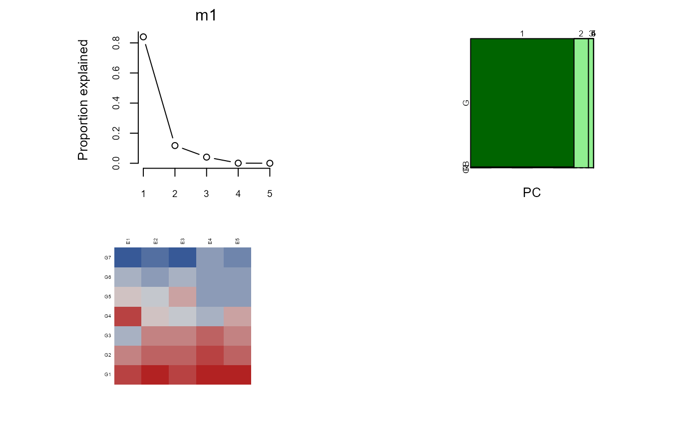
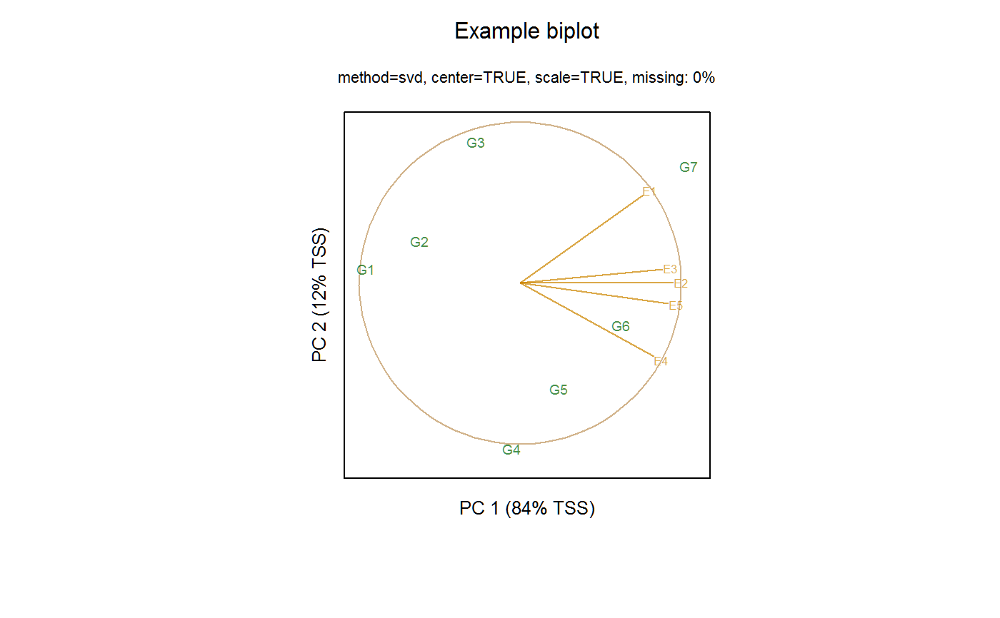
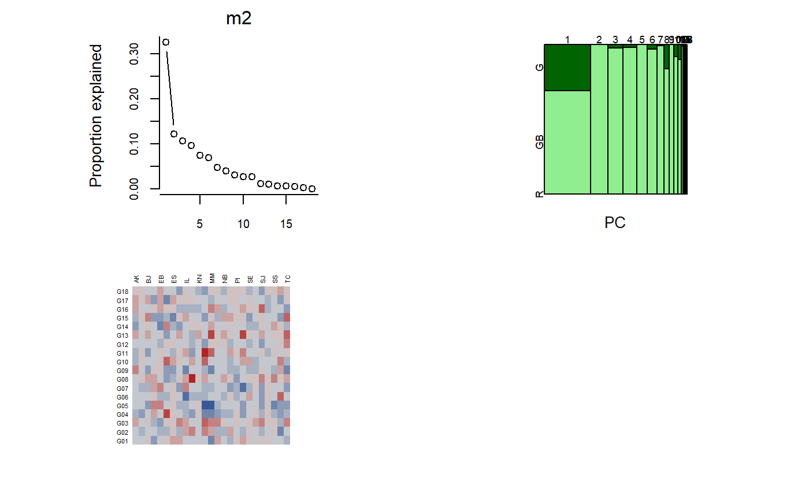
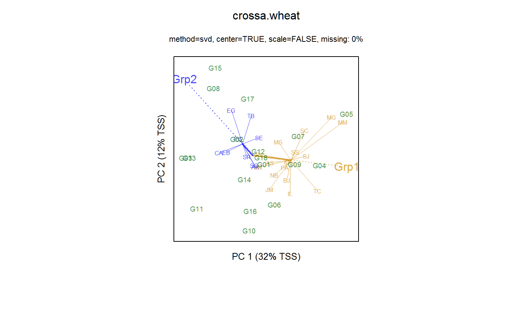

Fit a GGE (genotype + genotype * environment) model and display the results.
gge(x, ...) # S3 method for data.frame gge(x, formula, gen.group = NULL, env.group = NULL, ggb = FALSE, ...) # S3 method for formula gge(formula, data, gen.group = NULL, env.group = NULL, ggb = FALSE, ...) # S3 method for matrix gge( x, center = TRUE, scale = TRUE, gen.group = NULL, env.group = NULL, ggb = FALSE, comps = c(1, 2), method = "svd", ... ) # S3 method for gge plot(x, main = substitute(x), ...) # S3 method for gge biplot( x, main = substitute(x), subtitle = "", xlab = "auto", ylab = "auto", cex.gen = 0.6, cex.env = 0.5, col.gen = "darkgreen", col.env = "orange3", pch.gen = 1, lab.env = TRUE, comps = 1:2, flip = "auto", origin = "auto", res.vec = TRUE, hull = FALSE, zoom.gen = 1, zoom.env = 1, ... ) biplot3d(x, ...) # S3 method for gge biplot3d( x, cex.gen = 0.6, cex.env = 0.5, col.gen = "darkgreen", col.env = "orange3", comps = 1:3, lab.env = TRUE, res.vec = TRUE, zoom.gen = 1, ... )
| x | A matrix or data.frame. |
|---|---|
| ... | Other arguments (e.g. maxiter, gramschmidt) |
| formula | A formula |
| gen.group | genotype group |
| env.group | env group |
| ggb | If TRUE, fit a GGB biplot model. |
| data | Data frame |
| center | If TRUE, center values for each environment |
| scale | If TRUE, scale values for each environment |
| comps | Principal components to use for the biplot. Default c(1,2). |
| method | method used to find principal component directions. Either "svd" or "nipals". |
| main | Title, by default the name of the data. Use NULL to suppress the title. |
| subtitle | Subtitle to put in front of options. Use NULL to suppress the subtitle. |
| xlab | Label along axis. Default "auto" shows percent of variation explained. Use NULL to suppress. |
| ylab | Label along axis. Default "auto" shows percent of variation explained. Use NULL to suppress. |
| cex.gen | Character expansion for genotypes, default 0.6. Use 0 to omit genotypes. |
| cex.env | Character expansion for environment labels. |
| col.gen | Color for genotype labels. May be a single color for all genotypes, or a vector of colors for each genotype. |
| col.env | Color for environments. May be a single color for all environments, or a vector of colors for each environment. |
| pch.gen | Plot character for genotypes |
| lab.env | Label environments if TRUE. |
| flip | If "auto" then each axis is flipped so that the genotype ordinate is positively correlated with genotype means. Can also be a vector like c(TRUE,FALSE) for manual control. |
| origin | If "auto", the plotting window is centered on genotypes, otherwise the origin is at the middle of the window. |
| res.vec | If TRUE, for each group, draw residual vectors from the mean of the locs to the individual locs. |
| hull | If TRUE, show a which-won-where polygon. |
| zoom.gen | Zoom factor for manual control of genotype xlim,ylim The default is 1. Values less than 1 may be useful if genotype names are long. |
| zoom.env | Zoom factor for manual control of environment xlim,ylim. The default is 1. Values less than 1 may be useful if environment names are long. Not used for 3D biplots. |
A list of class gge containing:
The filled-in data
The original data
genotype coordinates
loc coordinates
block coordinates
If not NULL, use this to specify a column of the data.frame to classify genotypes into groups.
If not NULL, use this to specify a column of the data.frame to classify environments into groups.
If TRUE, create a GGB biplot
genotype means
mosaic plot data
variation explained by each PC
Data centered?
Data scaled?
Method used to calculate principal components.
Percent of x that is missing values
Maximum number of PCs
If there is replication in G*E, then the replications are averaged together before constructing the biplot.
The singular value decomposition of x is used to calculate the
principal components for the biplot. Missing values are NOT allowed.
The argument method can be either
'svd' for complete-data or 'nipals' for missing-data.
Jean-Louis Laffont, Kevin Wright and Mohamed Hanafi (2013). Genotype + Genotype x Block of Environments (GGB) Biplots. Crop Science, 53, 2332-2341. doi: 10.2135/cropsci2013.03.0178 .
Kroonenberg, Pieter M. (1997). Introduction to Biplots for GxE Tables, Research Report 51, Centre for Statistics, The University of Queensland, Brisbane, Australia. https://three-mode.leidenuniv.nl/document/biplot.pdf
Yan, W. and Kang, M.S. (2003). GGE Biplot Analysis. CRC Press.
Kevin Wright, Jean-Louis Laffont
Jean-Louis Laffont, Kevin Wright
# Example 1. Data is a data.frame in 'matrix' format B <- matrix(c(50, 67, 90, 98, 120, 55, 71, 93, 102, 129, 65, 76, 95, 105, 134, 50, 80, 102, 130, 138, 60, 82, 97, 135, 151, 65, 89, 106, 137, 153, 75, 95, 117, 133, 155), ncol=5, byrow=TRUE) rownames(B) <- c("G1","G2","G3","G4","G5","G6","G7") colnames(B) <- c("E1","E2","E3","E4","E5") library(gge) m1 = gge(B) plot(m1)  biplot(m1, main="Example biplot")  # biplot3d(m1) if(require(agridat)){ # crossa.wheat biplot # Specify env.group as column in data frame data(crossa.wheat) dat2 <- crossa.wheat m2 <- gge(yield~gen*loc, dat2, env.group=locgroup, scale=FALSE) plot(m2) biplot(m2, lab.env=TRUE, main="crossa.wheat") # biplot3d(m2) } #> Loading required package: agridat #> Please use `gge(data,formula)` instead of `gge(formula,data)`  